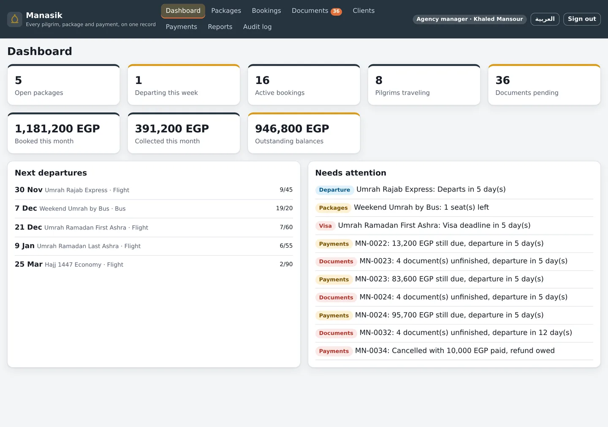
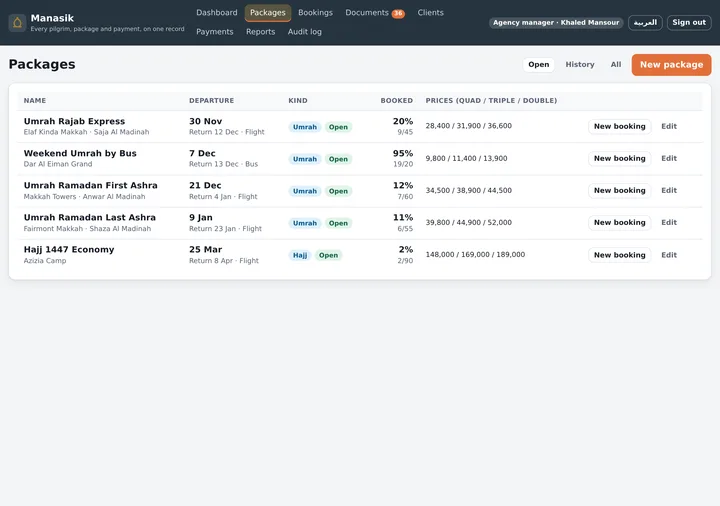
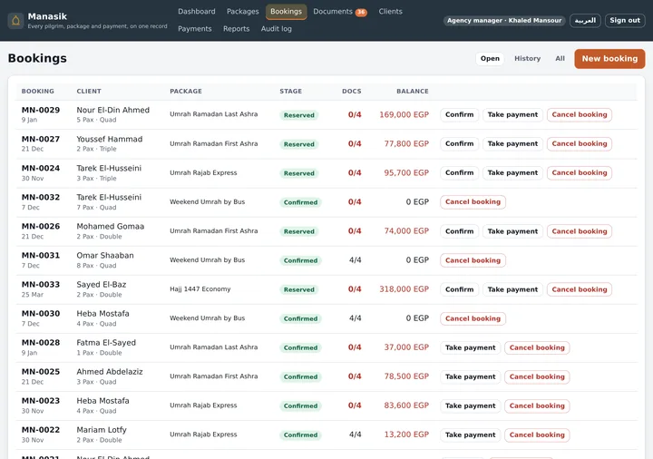
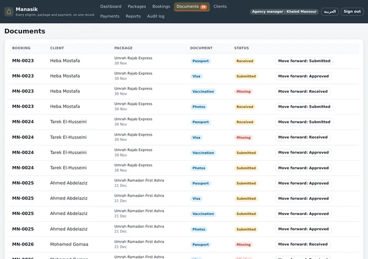
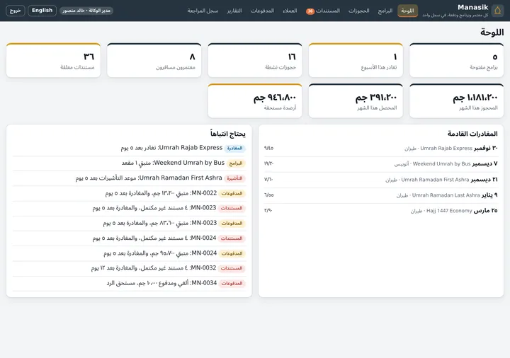
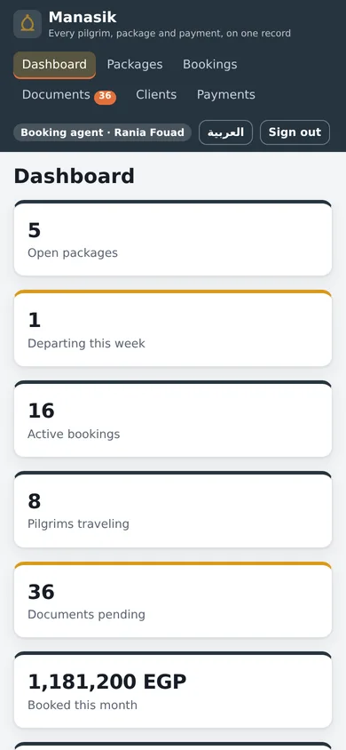

PORTFOLIO DEMO / BUILT / LIVE DEMO
Manasik
Every pilgrim, package and payment, on one record. Umrah and Hajj operations the way a Cairo agency actually runs them.

ACTUAL BUILDManasik · Agency manager dashboard. Fictional agency, pilgrims and packages.
The problem
An Umrah agency runs on a notebook of pilgrim names, a WhatsApp group per trip and the owner's memory. Nobody can say how many seats are left on the Rajab departure without counting messages, a passport sits in a desk drawer while the visa deadline approaches, the deposit a family paid is reconciled from bank screenshots when they ask, and the group leader lands in Jeddah with a photocopied list that is already out of date.
What was built
An operations system for one agency with five roles. Pilgrims sit in a register with their passport numbers; each Umrah or Hajj package carries its hotels, transport, capacity and a price per room type, quad, triple or double. A booking is placed on an open, not-yet-departed package, the rate is set by the room type the family chooses, and a package can never be overbooked. Four documents, passport, visa, vaccination and photo, open as missing with every booking and only move forward: received, submitted, approved. A booking confirms only once at least twenty percent is paid; a payment can never exceed the balance or be dated in the future. On departure day the manager sends the group traveling, which the system refuses while any booking is still unconfirmed, and a booking completes only when it is fully paid and every document is approved. Cancelling a paid booking flags the refund owed on the dashboard until it is settled. The documents officer never sees a price; the group leader sees only the traveling manifest, with every amount removed from the response on the server, not hidden on screen. The interface works in Arabic (right to left) and English, and on a phone.
What changes for the agency
Before. The seats left on a departure are a guess until the bus is full. The missing visa is discovered at the airport. The balance a family still owes is assembled from chat history, and a cancelled pilgrim's refund is remembered when they call angry.
After. The dashboard names the departure five days out with unfinished documents, the package down to its last seat, and the booking still carrying a balance three weeks before it flies. A package at capacity refuses the next booking instead of apologizing later, and every cancelled booking with money in hand shows the refund owed. The group leader reads the manifest instead of carrying a photocopy.
Why it matters to an agency owner
A small agency's reputation sits in departures and its money sits in balances. When the seat count, the visa pipeline and the payment record come from the same booking the agents actually update, nothing depends on one person's memory, and the refund owed is a number on a screen, not an argument. These are designed situations, not measured results from a real agency.
The approach
No framework and no build step: plain JavaScript pages, one serverless API function and one logic file that holds every rule (capacity guards, the twenty-percent confirm rule, the document stages, the payment limits, departure and completion, per-role views, the deterministic sample agency). The same file runs in the API, the browser and the test suites. Permissions are enforced on the server on every operation, create operations carry idempotency keys so a retried request never books a seat or records a payment twice, and every action lands in an audit log the manager alone can read. What a role must not see is removed from the response on the server, not hidden on screen.
The result
A live demo anyone can open. Sign in as the agency manager (PIN 1111), a booking agent (2222), the documents officer (3333), the accountant (4444) or a group leader (5555); the PINs are on the sign-in screen. The sample agency has 12 pilgrim clients, 13 Umrah and Hajj packages from a year of history to a Hajj 1447 wave, 34 bookings across every stage from reserved to completed, 136 document records and 61 payments across twelve months, and one cancelled booking still owed a refund. Verification: 13 unit tests and 100 browser and API checks run to completion against the live site, covering forged tokens, malformed and oversized bodies, every role's permission lane with the group leader refused every write, the complete booking lifecycle from a seat reservation to a confirmed, paid, documented and completed trip, the capacity and balance guards, idempotency keys, the documents officer and group leader never seeing money even on typed hash routes, XSS stored as text, Arabic RTL, phone-width layouts and zero page errors. The demo state resets itself roughly every six hours, so it always opens as the same working agency.
Inside the build
Open any preview to see the full capture. Captures show demonstration content, not evidence of client use.




